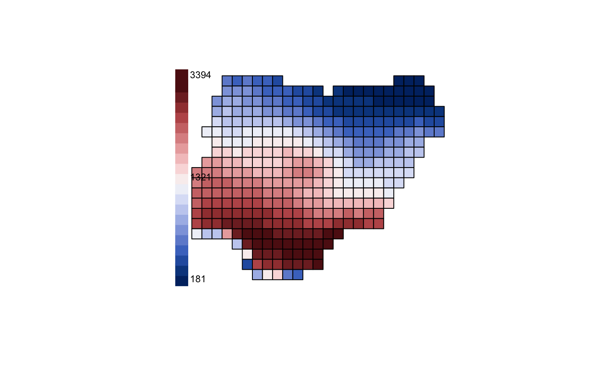

plot_swatch maps discretized values of a quantity using
continuous color gradients.
plot_swatch( x, values = NULL, col = hcl.colors(n = 10, palette = "Blue-Red 3", rev = FALSE), key_label = "", leg = 10, lwd = 15, pos = "bottomleft", legend = TRUE, border = par("fg"), breaks = "quantile", min = NULL, max = NULL, ... )
| x | A data frame or object of the class SpatialPolygonsDataFrame |
|---|---|
| values | Variable in the SpatialPolygonsDataFrame for which to discretize the values of the quantity. |
| col | A vector of colors |
| key_label | label for the color key |
| leg | Numeric, length of the legend |
| lwd | numeric, line width of the legend. |
| pos | location to position the legend such as “bottomright”, “bottomleft”, “topleft”, and “topright”. |
| legend | logical indicating whether to add a legend to the map. |
| border | plot polygons in SpatialPolygons object |
| breaks | one of “equal”, “pretty”, “jenks”,
“quantile” or numeric with the actual breaks by specifying
the minimum ( |
| min | the minima of the lowest bound of the break. |
| max | the maxima of the upper bound of the break |
| ... | Further arguments passed to or from other methods. |
Returns no value, just map swatch of colors in geographic space!
Barnabas H. Daru darunabas@gmail.com
library(sp) s <- readRDS(system.file("nigeria/SR_Naija.rds", package = "phyloregion")) plot_swatch(s, values = s$SR)#> Warning: CRS object has no comment